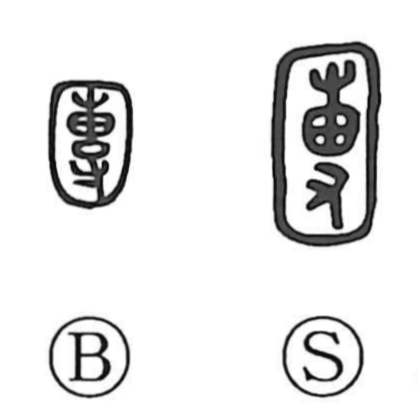

団

Uncategorized
Kun: | On: dan, ton
group ・ mass ・ lump ・ team
Explanation
Originally written 團, this is a phono-semantic character with 專 (専) as the phonetic, indicating the on reading. Shirakawa explains 專 as the image of something placed in a tied sack (恵) and pressed and beaten by a hand (寸) until it becomes a rounded mass. 團 then adds an outer wrapping, suggesting an even more completely rounded, bundled form. From this concrete scene come the senses of “round,” “to gather into a rounded mass,” “lump or clod,” and by extension “group” or “team.” The same hand-worked idea appears in related graphs like 搏, which depict beating and rolling something up by hand.